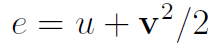
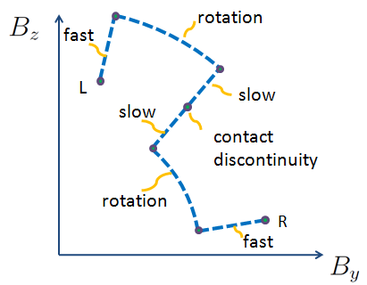

Fluid Dynamics and Shocks
Inviscid fluids are governed by the Euler equations, which are a statement of conservation of mass, momentum, and energy:
In addition, one typically assumes an equation of state (relationship between pressure and density) to close the system off, such as the ideal gas law:
where the internal energy (u) and total energy (e = internal + kinetic) are related by:

If you add magnetic fields and Maxwell’s equations (assuming no resistivity), you get the ideal MHD equations
where the total pressure is a sum of the gas pressure and magnetic pressure:
The above equations of fluid dynamics are partial differential equations, which means they only apply to smooth flows. Shocks, however, are discontinuities in the fluid variables (e.g. velocity, pressure):
The fluid equations are incompatible at the shock discontinuity, because spatial derivatives are ill-defined.
To solve for shock structure, you need to satisfy the Rankine-Hugoniot jump conditions, which are just statements of conservation of mass, momentum, and energy. They are obtained by integrating the Euler/MHD equations across the discontinuity.
The Riemann Problem
The 1D Riemann problem is a good way to understand shock basicsIt asks, how does a fluid evolve if I set up a discontinuity in density, velocity, and pressure at t=0?

The shock structure is complex. You don’t simply get an advection of the discontinuity. You produce several waves.
In an Euler fluid, you have 3 characteristic velocities:
You obtain three types of features:
- Shock: sharp discontinuity in fluid variables, physically admissible only if there is an entropy increase through the shock
- Rarefaction fan: occurs instead of shock when there is no entropy increase through shock
- Contact discontinuity: discontinuity in density only. It advects passively.
You end up with characteristics that may look something like:
In the MHD equations, things get more complicated. You have 7 characteristic velocities (and they can sometimes be degenerate!)
You end up with characteristics that may look something like:
In MHD shocks, you obtain a new type of discontinuity:
- Rotational discontinuity: A rotation of the transversal magnetic field associated with the Alfven wave speed

~~~
This concludes the basic theory background. You can click on the Euler and MHD tabs on the top of the page to explore the shock structure in a interactive Mathematica module.